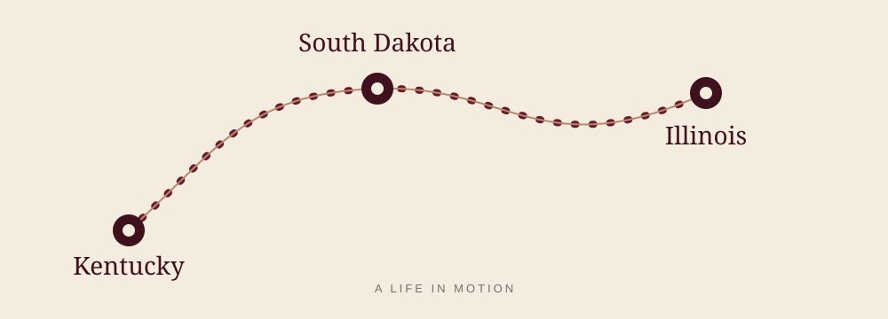

About Eli
A life in four places,
still becoming.
Plant Biology student, researcher, and reader. This is the longer version of the story.
01 / The short version
I study plants and the questions around them.
I’m a Plant Biology student at Southern Illinois University Carbondale, graduating in 2028. My work centers on agriculture genomics and horticultural plant breeding, especially among species native to the United States.
My current research is in Dr. Khalid Meksem’s lab, where I work on soybean genomics and breeding. I also spent summer 2026 in the Lebeis Lab at Michigan State University through an REU studying Paenibacillus.
02 / Places
Where I have lived

03 / Outside the lab
Many ways to stay curious.
Outside the lab, I enjoy fashion, play a wide variety of stringed instruments, and like to knit. I’m also a big basketball fan.
My reading moves between literature, philosophy, and scientific papers. Hemingway, Anatole France, The Decameron, and Jiddu Krishnamurti are among the writers and books I return to.
Go to the reading desk